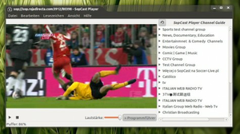

SopCast
Dieser Artikel wurde für die folgenden Ubuntu-Versionen getestet:
Ubuntu 16.04 Xenial Xerus
Zum Verständnis dieses Artikels sind folgende Seiten hilfreich:
SopCast  ist ein Programm, mit dem man Video-Streams im Internet schauen und im Prinzip auch veröffentlichen kann. Dabei wird aber nicht auf übliche Streaming-Technologie zurückgegriffen, sondern moderne Peer-to-Peer-Technologie verwendet, sodass es ohne hohe Serverlast möglich ist, viele Nutzer gleichzeitig zu versorgen. Voraussetzung ist also eine Internetverbindung, die einen hohen Upload ermöglicht.
ist ein Programm, mit dem man Video-Streams im Internet schauen und im Prinzip auch veröffentlichen kann. Dabei wird aber nicht auf übliche Streaming-Technologie zurückgegriffen, sondern moderne Peer-to-Peer-Technologie verwendet, sodass es ohne hohe Serverlast möglich ist, viele Nutzer gleichzeitig zu versorgen. Voraussetzung ist also eine Internetverbindung, die einen hohen Upload ermöglicht.
Die Linuxversion läuft unter Ubuntu sehr gut, beinhaltet aber nur die Empfangsfunktion. Man kann selbst wählen, welchen Player man zum Anschauen verwenden möchte, voreingestellt ist der MPlayer. Die Software steht unter der GPL2.
Eine Alternative zum reinen Betrachten, die bis zur Ubuntu 14.04 zur Verfügung steht, ist TV-Maxe . Zur Installation ist wie bei SopCast das Einbinden eines PPAs erforderlich.
Rechtliches¶
Mit der Nutzung von SopCast kann man sich, je nachdem welche Inhalte man streamt, in einer rechtlichen Grauzone bewegen. Da SopCast nach dem Peer-to-Peer-Prinzip arbeitet, werden Streams, die man anschaut. eventuell auch weiterverteilt, so dass man aktiv an der Weitergabe beteiligt ist. Das ist bei urheberrechtlichen geschützten Inhalten problematisch. Siehe dazu auch auf techbook.de  oder chip.de .
oder chip.de .
Installation¶
SopCast ist nicht in den offiziellen Paketquellen vorhanden. Man kann aber ein "Personal Package Archiv" (PPA)[1] nutzen, über das sich der Player installieren lässt.
PPA¶
Adresszeile zum Hinzufügen des PPAs:
ppa:linuxthebest.net/sopcast
Hinweis!
Zusätzliche Fremdquellen können das System gefährden.
Ein PPA unterstützt nicht zwangsläufig alle Ubuntu-Versionen. Weitere Informationen sind der  PPA-Beschreibung des Eigentümers/Teams linuxthebest.net zu entnehmen.
PPA-Beschreibung des Eigentümers/Teams linuxthebest.net zu entnehmen.
Damit Pakete aus dem PPA genutzt werden können, müssen die Paketquellen neu eingelesen werden.
Nach dem Aktualisieren der Paketquellen kann das folgende Paket installiert werden[2]:
sopcast-player
 mit apturl
mit apturl
Paketliste zum Kopieren:
sudo apt-get install sopcast-player
sudo aptitude install sopcast-player
Aus dem Quelltext¶
Alternativ kann man sich auch den Quelltext als sopcast-player-*.tar.gz  herunterladen und selbst kompilieren[3].
herunterladen und selbst kompilieren[3].
Kommandozeilenversion¶
Wer Sopcast nur als Kommandozeilenprogramm verwenden möchte, muss dagegen sp-auth-*.tar.gz herunterladen und entpacken. Gestartet wird Sopcast dann aus dem Verzeichnis heraus mit dem Befehl:
./sp-sc-auth
Benutzung¶
Anschließend sollte das Programm bei Ubuntu-Varianten mit einem Anwendungsmenü unter "Unterhaltungsmedien -> SopCast Player" oder "Multimedia -> SopCast Player" zu finden sein. Das Programm ist nicht unbedingt selbsterklärend, daher gibt es an dieser Stelle noch ein paar Hinweise zur Bedienung.
Bedienung¶
 Beim Programmstart öffnet sich ein Fenster, in dem nach einem kurzen (oder längeren) Augenblick die Kanalliste geladen wird. Man kann aus bestimmten Kategorien die Sender wählen. Es kommt vor, dass die Server von sopcast.org, von denen die Kanalliste geladen wird, sehr ausgelastet sind. Das Laden der Kanalliste kann daher auch schon mal ein paar Minuten benötigen.
Zur Verfügung stehen derzeit (August 2017) vor allem rumänische Kanäle, es können aber auch andere Kanäle hinzugefügt werden. Ein Doppelklick auf den ausgewählten Kanal startet den Ladevorgang. Da es sich hier um Peer-to-Peer-Technologie handelt, dauert es ein wenig, bis der Sender abspielbereit ist. In der Statusleiste am unteren Rand lässt sich der aktuelle Vorgang ablesen. Das Betätigen des Player-Knopfes startet die Wiedergabe in einem Medienplayer.
Den Vollbildmodus kann man mit einem Doppel- -Klick im Playerfenster oder über die Taste
F11 aktivieren bzw. verlassen.
-Klick im Playerfenster oder über die Taste
F11 aktivieren bzw. verlassen.
Konfiguration¶
Über "Bearbeiten -> Einstellungen" kann man grundlegende Einstellungen vornehmen. Wenn man den MPlayer nicht benutzen will, kann man hier den Befehl für jeden beliebigen VideoPlayer auswählen, allerdings sollte er mit dem Windows-Streaming-Format wmv umgehen können (z.B. XINE oder VLC). Zusätzlich müssen die entsprechenden Codecs installiert sein.
Über "Datei -> Öffnen" kann ein nicht aufgelisteter Kanal geöffnet werden.
Problembehebung¶
Der eingestellte Link zum Channel-Guide funktioniert ggf. nicht; statt dessen kann in den Einstellungen
http://channel.sopcast.com/gchlxmlverwendet werden.Da der interne Videoplayer nicht wirklich stabil läuft und beim Starten von Streams oft abstürzt, ist es empfehlenswert, einen externen Player zu benutzen. Leider funktioniert das unter 16.04. nicht; mit dem eingestellten Wert
mplayer -ontop -geometry 100%%:100%%erfolgt kein Start des mplayers. Auch mit dem Eintragvlcfunktioniert die externe Wiedergabe nicht; VLC wird zwar gestartet, friert dann aber ein und blockiert ggf. den gesamten Rechner. Als provisorische Lösung können die Player mit der Adressevlc http://127.0.0.1:8902/tv.asf
bzw.
mplayer -ontop http://127.0.0.1:8902/tv.asf
gestartet werden, nachdem SopCast gestartet wurde (Portangaben in den Einstellungen entsprechend festlegen). Die Wiedergabe ist nicht ganz synchron, insofern entweder in SopCast die Lautstärke herunterregeln, oder aber dann in den Einstellungen "Externes Abspielprogramm wählen" aktivieren, dadurch wird der interne Player umgehend abgeschaltet, und im Fenster erscheinen nähere Angaben zu dem verwendeten Stream (dazu natürlich nicht
vlcals Befehl für den externen Player verwenden).Soll der mit dem SopCast-Player empfangene Stream an einen Streaming-Client weitergeleitet werden, kann es bei instabilen Streams schnell zu häufigen Verbindungsabbrüchen kommen. Um eine stabile Verbindung zu einem Streaming-Client zu erhalten, empfiehlt es sich deshalb, VLC als Stream-Server für weitere Clients zu verwenden. Dazu wird der vom SopCast-Player versendete Stream mit VLC empfangen und auf einen anderen Port als neuer Stream ausgesandt. Weil VLC auch bei zeitweise fehlenden Stream-Input die Verbindung nicht gleich unterbricht, kann so eine stabile Verbindung zu weiteren (externen) Clients erhalten werden.
Im Terminal auftretende Warnungen in der Art
(sopcast-player.py:3872): libglade-WARNING **: unknown attribute `swapped' for <signal>
können ignoriert werden.
Links¶
Tipp zum Öffnen eines Streams aus Firefox heraus
- Blogbeitrag, 11/2010Watching SopCast from the command line
- Skript zum Aufruf von SopCast-Streams aus dem Terminalsopcast.sh
Skript, mit dem SopCast-Streams per Mausklick dierekt aus Firefox oder Opera mit VLC wiedergegeben werden können
- Erstellt mit Inyoka
-
 2004 – 2017 ubuntuusers.de • Einige Rechte vorbehalten
2004 – 2017 ubuntuusers.de • Einige Rechte vorbehalten
Lizenz • Kontakt • Datenschutz • Impressum • Serverstatus -
Serverhousing gespendet von